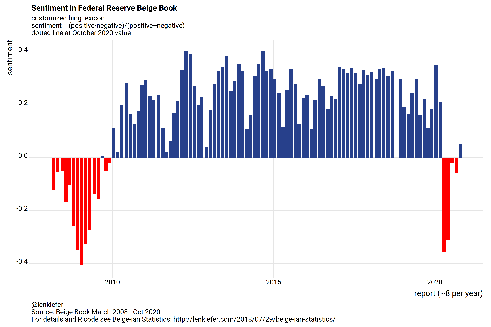
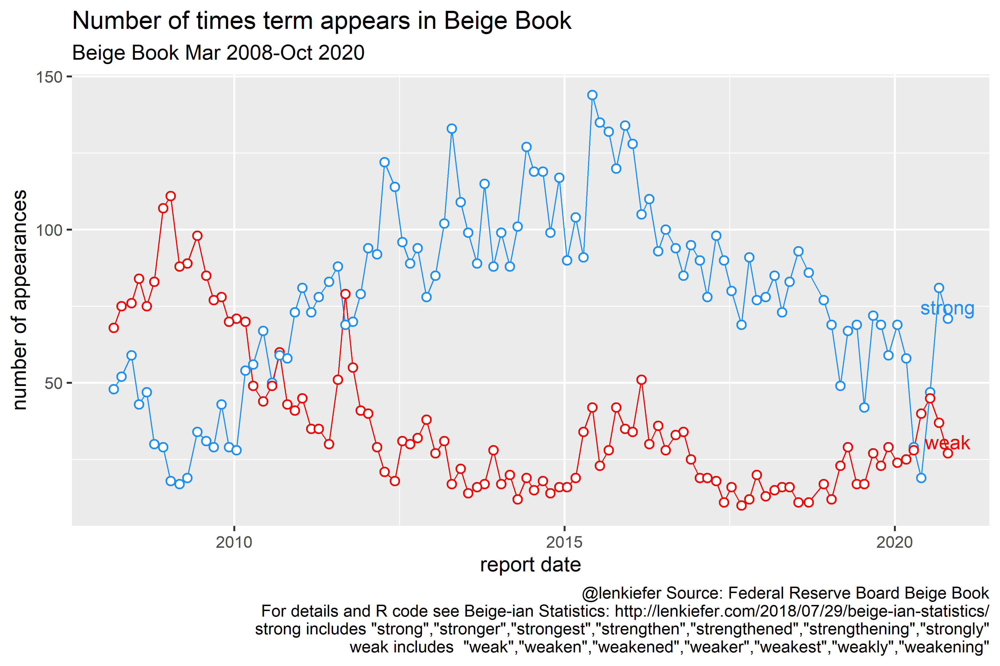
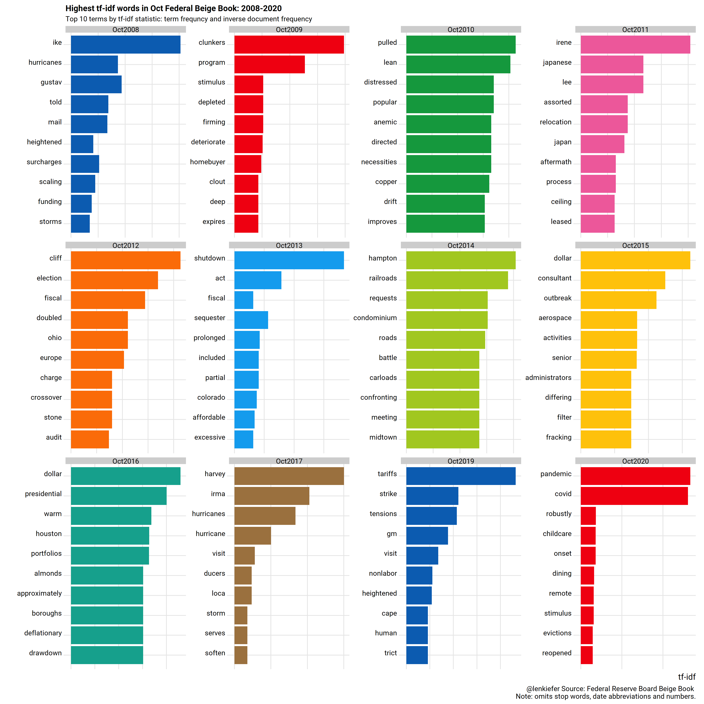
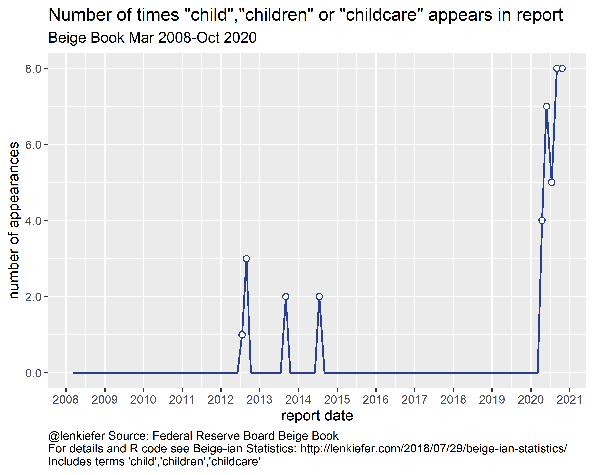
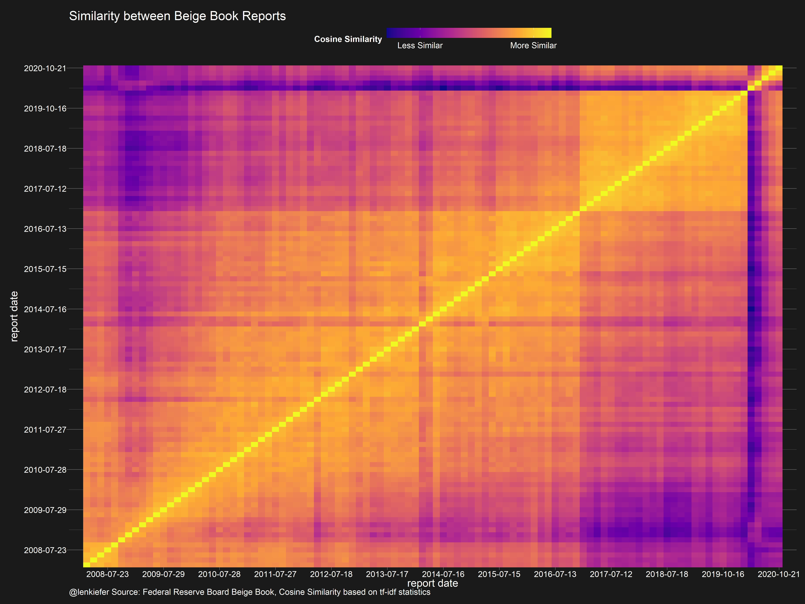
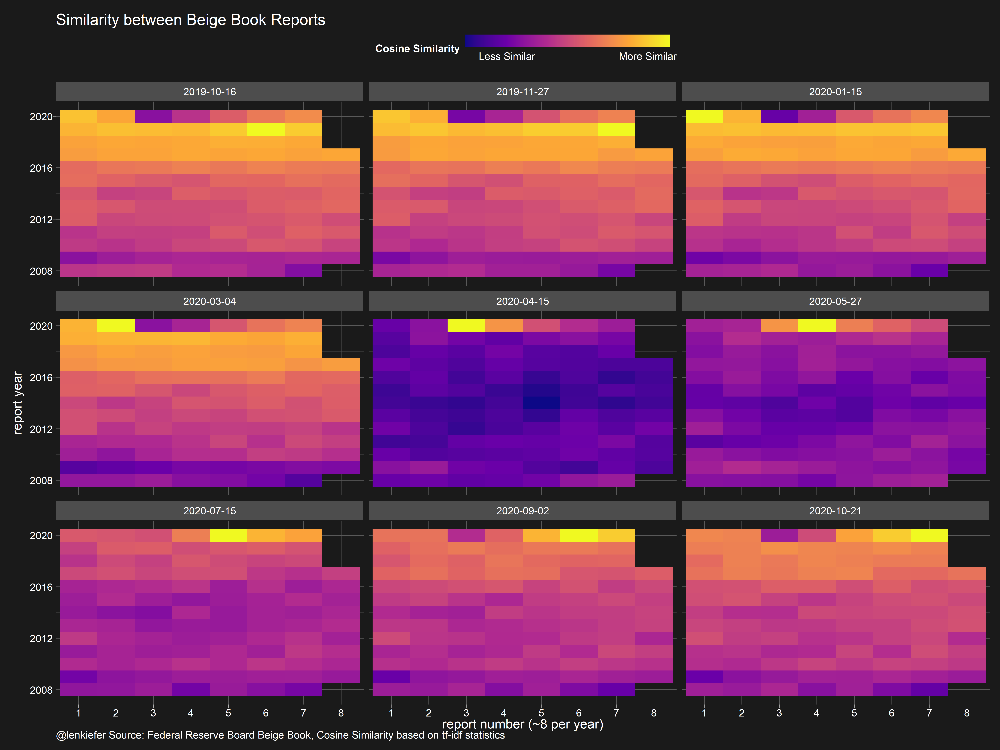

Let’s update our earlier analysis to examine the Federal Reserve’s Beige Book.
Following my earlier post, we can construct a sentiment measure for each report. It turns out that after turning sharply negative in spring, the October 2020 report returned to positive territory.

The sentiment index looks at all words and after adjusting for economics terms (like gross) we score them for sentiment. We could just count up the number of times we see words like “stong” vs words like “weak”. We see that in October 2020 “weak” started to show up less.

We can use the term frequency and inverse document frequency analysis to gauge what terms are important in each report. We can compare reports made in October of each year:

We see “childcare” show up in October 2020 in addition to pandemic related terms. How often did “children” show up in prior reports? Not much it turns out. See this report, my colleagues at Freddie Mac wrote on how childcare costs relate to housing: Family Budget Burdens Squeezing Housing: Child Care Costs.

A report like no other
I talked about similarity measures in my Killing it while shilling it blog post. We can compute a cosine similiarity metric ( see http://text2vec.org/similarity.html#cosine_similarity and https://www.brodrigues.co/blog/2019-06-04-cosine_sim/ ) to compare how the reports are.
The chart compares each report to each other report. Along the diagonal we are comparing a report ot itself, so it has perfect similarity (more yellow). The more different the report, based on the tf-idf stat, the more purple.
You can see a long purple line extending from the spring 2020 reports. As the economy was hit by the COVID-19 pandemic, the economic response was unprecedented. That shows up in the reports.
Perhaps we can see better with an alternative visualization.

If we pull out he last nine reports we can rearrange each column in its own grid.
The reports in April and May 2020 were vey much like themselves (and only themselves), but the September and October reports are starting to resemeble pre-pandemic reports.

R code
The R code below will gather the data and prepare all the plots. The data wrangling could take a while since we are reading in multiple pdf files.
# load libraries ----
suppressPackageStartupMessages({
library(extrafont)
library(ggraph)
library(ggridges)
library(pdftools)
library(tidyverse)
library(tidytext)
library(forcats)
library(reshape2)
library(tidyr)
library(igraph)
library(widyr)
library(lubridate)
library(ggrepel)
library(topicmodels)
library(ggpage)
library(darklyplot) # for theme_dark2 (available on my github page)
library(tidytext)
library(SnowballC)
library(stopwords)
library(text2vec)
library(viridis)}
)
get_data_f <- function(){
beige.links.all<-
tibble::tribble(
~url, ~report, ~report.date,
"https://www.federalreserve.gov/monetarypolicy/files/BeigeBook_20201021.pdf", 20201021, "2020-10-21",
"https://www.federalreserve.gov/monetarypolicy/files/BeigeBook_20200902.pdf", 20200902, "2020-09-02",
"https://www.federalreserve.gov/monetarypolicy/files/BeigeBook_20200715.pdf", 20200715, "2020-07-15",
"https://www.federalreserve.gov/monetarypolicy/files/BeigeBook_20200527.pdf", 20200527, "2020-05-27",
"https://www.federalreserve.gov/monetarypolicy/files/BeigeBook_20200415.pdf", 20200415, "2020-04-15",
"https://www.federalreserve.gov/monetarypolicy/files/BeigeBook_20200304.pdf", 20200304, "2020-03-04",
"https://www.federalreserve.gov/monetarypolicy/files/BeigeBook_20200115.pdf", 20200115, "2020-01-15",
"https://www.federalreserve.gov/monetarypolicy/files/BeigeBook_20190904.pdf", 20190904, "2019-09-04",
"https://www.federalreserve.gov/monetarypolicy/files/BeigeBook_20191016.pdf", 20191016, "2019-10-16",
"https://www.federalreserve.gov/monetarypolicy/files/BeigeBook_20191127.pdf", 20191127, "2019-11-27",
"https://www.federalreserve.gov/monetarypolicy/files/BeigeBook_20190717.pdf", 20190717L, "2019-07-17",
"https://www.federalreserve.gov/monetarypolicy/files/BeigeBook_20190605.pdf", 20190605L, "2019-06-05",
"https://www.federalreserve.gov/monetarypolicy/files/BeigeBook_20190417.pdf", 20190417L, "2019-04-17",
"https://www.federalreserve.gov/monetarypolicy/files/BeigeBook_20190306.pdf", 20190306L, "2019-03-06",
"https://www.federalreserve.gov/monetarypolicy/files/BeigeBook_20190116.pdf", 20190116L, "2019-01-16",
"https://www.federalreserve.gov/monetarypolicy/files/BeigeBook_20181205.pdf", 20181205L, "2018-12-05",
"https://www.federalreserve.gov/monetarypolicy/files/BeigeBook_20180912.pdf", 20180912L, "2018-09-12",
"https://www.federalreserve.gov/monetarypolicy/files/BeigeBook_20180117.pdf", 20180117L, "2018-01-17",
"https://www.federalreserve.gov/monetarypolicy/files/BeigeBook_20180307.pdf", 20180307L, "2018-03-07",
"https://www.federalreserve.gov/monetarypolicy/files/BeigeBook_20180418.pdf", 20180418L, "2018-04-18",
"https://www.federalreserve.gov/monetarypolicy/files/BeigeBook_20180530.pdf", 20180530L, "2018-05-30",
"https://www.federalreserve.gov/monetarypolicy/files/BeigeBook_20180718.pdf", 20180718L, "2018-07-18",
"https://www.federalreserve.gov/monetarypolicy/beigebook/files/Beigebook_20170118.pdf", 20170118L, "2017-01-18",
"https://www.federalreserve.gov/monetarypolicy/files/Beigebook_20170301.pdf", 20170301L, "2017-03-01",
"https://www.federalreserve.gov/monetarypolicy/files/Beigebook_20170419.pdf", 20170419L, "2017-04-19",
"https://www.federalreserve.gov/monetarypolicy/files/BeigeBook_20170531.pdf", 20170531L, "2017-05-31",
"https://www.federalreserve.gov/monetarypolicy/files/BeigeBook_20170712.pdf", 20170712L, "2017-07-12",
"https://www.federalreserve.gov/monetarypolicy/files/Beigebook_20170906.pdf", 20170906L, "2017-09-06",
"https://www.federalreserve.gov/monetarypolicy/files/BeigeBook_20171018.pdf", 20171018L, "2017-10-18",
"https://www.federalreserve.gov/monetarypolicy/files/BeigeBook_20171129.pdf", 20171129L, "2017-11-29",
"https://www.federalreserve.gov/monetarypolicy/beigebook/files/Beigebook_20160113.pdf", 20160113L, "2016-01-13",
"https://www.federalreserve.gov/monetarypolicy/beigebook/files/Beigebook_20160302.pdf", 20160302L, "2016-03-02",
"https://www.federalreserve.gov/monetarypolicy/beigebook/files/Beigebook_20160413.pdf", 20160413L, "2016-04-13",
"https://www.federalreserve.gov/monetarypolicy/beigebook/files/Beigebook_20160601.pdf", 20160601L, "2016-06-01",
"https://www.federalreserve.gov/monetarypolicy/beigebook/files/Beigebook_20160713.pdf", 20160713L, "2016-07-13",
"https://www.federalreserve.gov/monetarypolicy/beigebook/files/Beigebook_20160907.pdf", 20160907L, "2016-09-07",
"https://www.federalreserve.gov/monetarypolicy/beigebook/files/Beigebook_20161019.pdf", 20161019L, "2016-10-19",
"https://www.federalreserve.gov/monetarypolicy/beigebook/files/Beigebook_20161130.pdf", 20161130L, "2016-11-30",
"https://www.federalreserve.gov/monetarypolicy/beigebook/files/BeigeBook_20150114.pdf", 20150114L, "2015-01-14",
"https://www.federalreserve.gov/monetarypolicy/beigebook/files/BeigeBook_20150304.pdf", 20150304L, "2015-03-04",
"https://www.federalreserve.gov/monetarypolicy/beigebook/files/BeigeBook_20150415.pdf", 20150415L, "2015-04-15",
"https://www.federalreserve.gov/monetarypolicy/beigebook/files/BeigeBook_20150603.pdf", 20150603L, "2015-06-03",
"https://www.federalreserve.gov/monetarypolicy/beigebook/files/BeigeBook_20150715.pdf", 20150715L, "2015-07-15",
"https://www.federalreserve.gov/monetarypolicy/beigebook/files/BeigeBook_20150902.pdf", 20150902L, "2015-09-02",
"https://www.federalreserve.gov/monetarypolicy/beigebook/files/Beigebook_20151014.pdf", 20151014L, "2015-10-14",
"https://www.federalreserve.gov/monetarypolicy/beigebook/files/Beigebook_20151202.pdf", 20151202L, "2015-12-02",
"https://www.federalreserve.gov/monetarypolicy/beigebook/files/Beigebook_20140115.pdf", 20140115L, "2014-01-15",
"https://www.federalreserve.gov/monetarypolicy/beigebook/files/Beigebook_20140305.pdf", 20140305L, "2014-03-05",
"https://www.federalreserve.gov/monetarypolicy/beigebook/files/BeigeBook_20140416.pdf", 20140416L, "2014-04-16",
"https://www.federalreserve.gov/monetarypolicy/beigebook/files/BeigeBook_20140604.pdf", 20140604L, "2014-06-04",
"https://www.federalreserve.gov/monetarypolicy/beigebook/files/Beigebook_20140716.pdf", 20140716L, "2014-07-16",
"https://www.federalreserve.gov/monetarypolicy/beigebook/files/BeigeBook_20140903.pdf", 20140903L, "2014-09-03",
"https://www.federalreserve.gov/monetarypolicy/beigebook/files/BeigeBook_20141015.pdf", 20141015L, "2014-10-15",
"https://www.federalreserve.gov/monetarypolicy/beigebook/files/BeigeBook_20141203.pdf", 20141203L, "2014-12-03",
"https://www.federalreserve.gov/monetarypolicy/beigebook/files/Beigebook_20130116.pdf", 20130116L, "2013-01-16",
"https://www.federalreserve.gov/monetarypolicy/beigebook/files/Beigebook_20130306.pdf", 20130306L, "2013-03-06",
"https://www.federalreserve.gov/monetarypolicy/beigebook/files/Beigebook_20130417.pdf", 20130417L, "2013-04-17",
"https://www.federalreserve.gov/monetarypolicy/beigebook/files/Beigebook_20130605.pdf", 20130605L, "2013-06-05",
"https://www.federalreserve.gov/monetarypolicy/beigebook/files/Beigebook_20130717.pdf", 20130717L, "2013-07-17",
"https://www.federalreserve.gov/monetarypolicy/beigebook/files/Beigebook_20130904.pdf", 20130904L, "2013-09-04",
"https://www.federalreserve.gov/monetarypolicy/beigebook/files/BeigeBook_20131016.pdf", 20131016L, "2013-10-16",
"https://www.federalreserve.gov/monetarypolicy/beigebook/files/Beigebook_20131204.pdf", 20131204L, "2013-12-04",
"https://www.federalreserve.gov/monetarypolicy/beigebook/files/fullreport20120111.pdf", 20120111L, "2012-01-11",
"https://www.federalreserve.gov/monetarypolicy/beigebook/files/fullreport20120229.pdf", 20120229L, "2012-02-29",
"https://www.federalreserve.gov/monetarypolicy/beigebook/files/fullreport20120411.pdf", 20120411L, "2012-04-11",
"https://www.federalreserve.gov/monetarypolicy/beigebook/files/Beigebook_20120606.pdf", 20120606L, "2012-06-06",
"https://www.federalreserve.gov/monetarypolicy/beigebook/files/Beigebook_20120718.pdf", 20120718L, "2012-07-18",
"https://www.federalreserve.gov/monetarypolicy/beigebook/files/Beigebook_20120829.pdf", 20120829L, "2012-08-29",
"https://www.federalreserve.gov/monetarypolicy/beigebook/files/Beigebook_20121010.pdf", 20121010L, "2012-10-10",
"https://www.federalreserve.gov/monetarypolicy/beigebook/files/Beigebook_20121128.pdf", 20121128L, "2012-11-28",
"https://www.federalreserve.gov/monetarypolicy/beigebook/files/fullreport20110112.pdf", 20110112L, "2011-01-12",
"https://www.federalreserve.gov/monetarypolicy/beigebook/files/fullreport20110302.pdf", 20110302L, "2011-03-02",
"https://www.federalreserve.gov/monetarypolicy/beigebook/files/fullreport20110413.pdf", 20110413L, "2011-04-13",
"https://www.federalreserve.gov/monetarypolicy/beigebook/files/fullreport20110608.pdf", 20110608L, "2011-06-08",
"https://www.federalreserve.gov/monetarypolicy/beigebook/files/fullreport20110727.pdf", 20110727L, "2011-07-27",
"https://www.federalreserve.gov/monetarypolicy/beigebook/files/fullreport20110907.pdf", 20110907L, "2011-09-07",
"https://www.federalreserve.gov/monetarypolicy/beigebook/files/fullreport20111019.pdf", 20111019L, "2011-10-19",
"https://www.federalreserve.gov/monetarypolicy/beigebook/files/fullreport20111130.pdf", 20111130L, "2011-11-30",
"https://www.federalreserve.gov/fomc/beigebook/2010/20100113/fullreport20100113.pdf", 20100113L, "2010-01-13",
"https://www.federalreserve.gov/fomc/beigebook/2010/20100303/fullreport20100303.pdf", 20100303L, "2010-03-03",
"https://www.federalreserve.gov/fomc/beigebook/2010/20100414/fullreport20100414.pdf", 20100414L, "2010-04-14",
"https://www.federalreserve.gov/fomc/beigebook/2010/20100609/fullreport20100609.pdf", 20100609L, "2010-06-09",
"https://www.federalreserve.gov/fomc/beigebook/2010/20100728/fullreport20100728.pdf", 20100728L, "2010-07-28",
"https://www.federalreserve.gov/fomc/beigebook/2010/20100908/fullreport20100908.pdf", 20100908L, "2010-09-08",
"https://www.federalreserve.gov/fomc/beigebook/2010/20101020/fullreport20101020.pdf", 20101020L, "2010-10-20",
"https://www.federalreserve.gov/fomc/beigebook/2010/20101201/fullreport20101201.pdf", 20101201L, "2010-12-01",
"https://www.federalreserve.gov/fomc/beigebook/2009/20090114/fullreport20090114.pdf", 20090114L, "2009-01-14",
"https://www.federalreserve.gov/fomc/beigebook/2009/20090304/fullreport20090304.pdf", 20090304L, "2009-03-04",
"https://www.federalreserve.gov/fomc/beigebook/2009/20090415/fullreport20090415.pdf", 20090415L, "2009-04-15",
"https://www.federalreserve.gov/fomc/beigebook/2009/20090610/fullreport20090610.pdf", 20090610L, "2009-06-10",
"https://www.federalreserve.gov/fomc/beigebook/2009/20090729/fullreport20090729.pdf", 20090729L, "2009-07-29",
"https://www.federalreserve.gov/fomc/beigebook/2009/20090909/fullreport20090909.pdf", 20090909L, "2009-09-09",
"https://www.federalreserve.gov/fomc/beigebook/2009/20091021/fullreport20091021.pdf", 20091021L, "2009-10-21",
"https://www.federalreserve.gov/fomc/beigebook/2009/20091202/fullreport20091202.pdf", 20091202L, "2009-12-02",
"https://www.federalreserve.gov/fomc/beigebook/2008/20080305/fullreport20080305.pdf", 20080305L, "2008-03-05",
"https://www.federalreserve.gov/fomc/beigebook/2008/20080416/fullreport20080416.pdf", 20080416L, "2008-04-16",
"https://www.federalreserve.gov/fomc/beigebook/2008/20080611/fullreport20080611.pdf", 20080611L, "2008-06-11",
"https://www.federalreserve.gov/fomc/beigebook/2008/20080723/fullreport20080723.pdf", 20080723L, "2008-07-23",
"https://www.federalreserve.gov/fomc/beigebook/2008/20080903/fullreport20080903.pdf", 20080903L, "2008-09-03",
"https://www.federalreserve.gov/fomc/beigebook/2008/20081015/fullreport20081015.pdf", 20081015L, "2008-10-15",
"https://www.federalreserve.gov/fomc/beigebook/2008/20081203/fullreport20081203.pdf", 20081203L, "2008-12-03"
)
# get data ----
fed_text_raw <-
beige.links.all %>%
mutate(text= map(url,pdf_text)) %>%
unnest(text) %>%
group_by(report) %>%
# create a page number indicator
mutate(page=row_number()) %>%
ungroup()
fed_text_raw_packed <- fed_text_raw
fed_text_raw <-
fed_text_raw %>%
mutate(text=strsplit(text,"\r")) %>% unnest(text) %>%
mutate(
line=row_number(),
text=gsub("\n","",text)) %>%
mutate(ctext =strsplit(text, "\\s\\s+")) %>% unnest(ctext) %>%
group_by(report,line) %>% mutate(col.id=row_number()) %>%
arrange(col.id,line) %>%
group_by(page,line) %>%
distinct(ctext, .keep_all=TRUE) %>%
mutate(rdate= as.Date(as.character(report),"%Y%m%d")) %>% #create report data
ungroup()
save(fed_text_raw_packed, fed_text_raw, file="tidytext_beige_oct2020.Rdata")
}
# run code to get data
get_data_f()
load(file="tidytext_beige_oct2020.Rdata")
fed_text <-
fed_text_raw %>%
dplyr::select(report,rdate,page,line,col.id,ctext) %>%
as_tibble() %>%
unnest_tokens(word,ctext)
fed_words <-
fed_text %>%
count(word,rdate,sort=TRUE)
fed
fed_numbers <-
fed_words %>%
filter(! word %in% tm::removeNumbers(fed_words$word)) %>%
arrange(rdate,word) %>%
mutate(digit=strsplit(word,"")) %>% unnest(digit) %>%
mutate(digit=as.numeric(digit))
fed_digits <-
fed_numbers %>%
group_by(rdate, digit) %>%
summarize(n=sum(n))
fed_text <-
fed_text_raw %>%
dplyr::select(report,rdate,page,line,col.id,ctext) %>%
as_tibble() %>%
unnest_tokens(word,ctext)
custom_stop_words2 <-
bind_rows(data_frame(word = c("debt",
"gross",
"crude",
"well",
"maturity",
"work",
"marginally",
"leverage"),
lexicon = c("custom")),
stop_words)
fed_sentiment <-
fed_text %>%
anti_join(custom_stop_words2) %>%
inner_join(get_sentiments("bing")) %>%
count(rdate, sentiment) %>%
spread(sentiment, n, fill = 0) %>%
mutate(sentiment = (positive - negative)/(positive+negative))
g1 <-
ggplot(fed_sentiment, aes(rdate, sentiment, fill = sentiment>0)) +
geom_col(show.legend = FALSE) +
scale_fill_manual(values=c("red","#27408b"))+
#facet_wrap(~report, ncol = 8, scales = "free_x")+
theme_ridges(font_family="Roboto")+
labs(x="report (~8 per year)",y="sentiment",
title="Sentiment in Federal Reserve Beige Book",
subtitle="customized bing lexicon\nsentiment = (positive-negative)/(positive+negative)\ndotted line at October 2020 value",
caption="@lenkiefer\nSource: Beige Book March 2008 - Oct 2020\nFor details and R code see Beige-ian Statistics: http://lenkiefer.com/2018/07/29/beige-ian-statistics/" )+
geom_hline(data=. %>% filter(rdate==max(rdate)), aes(yintercept=sentiment),linetype=2)+
theme(plot.caption=element_text(hjust=0))
g1
beige_words2 <-
fed_text %>%
mutate(word = gsub("[^A-Za-z ]","",word)) %>% # keep only letters (drop numbers and special symbols)
filter(word != "") %>%
anti_join(stop_words) %>%
filter(word %in% c("strong","stronger","strongest","strengthen","strengthened","strongly","strength","strengthening",
"weak","weaken","weakened","weaker","weakest","weakly","weakening")) %>%
mutate(word=ifelse(word %in% c("strong","stronger","strongest","strengthen","strengthened","strongly","strength","strengthening"), "strong","weak")) %>%
group_by(rdate) %>%
count(word,sort=TRUE) %>%
mutate(rank=row_number())
beige_words2 %>%
g2<-
ggplot(aes(x=rdate,y=n, color=word))+
geom_line()+
geom_point(shape=21,fill="white",size=3,stroke=1.1)+
#scale_x_date(date_breaks="1 month",date_labels="%b")+
scale_y_continuous(labels=scales::comma)+
#scale_color_fmac(palette="bgo")+
scale_color_manual(values=c("dodgerblue","red"))+
#facet_wrap(~word,scales="free_y",ncol=1)+
ggrepel::geom_text_repel(data = .%>% filter(rdate==max(beige_words$rdate)),
aes(label=word,vjust=ifelse(word=="strong",1.1,1.2)), size=6)+
theme_gray(base_size=18)+
theme(legend.position="none")+
labs(x="report date",y="number of appearances",
title="Number of times term appears in Beige Book",
subtitle="Beige Book Mar 2008-Oct 2020",
caption='@lenkiefer Source: Federal Reserve Board Beige Book\nFor details and R code see Beige-ian Statistics: http://lenkiefer.com/2018/07/29/beige-ian-statistics/\nstrong includes "strong","stronger","strongest","strengthen","strengthened","strengthening","strongly"\nweak includes "weak","weaken","weakened","weaker","weakest","weakly","weakening"' )
g2
custom_stop_words3 <-
bind_rows(data_frame(word = c(tolower(month.abb), "one","two","three","four","five","six",
"seven","eight","nine","ten","eleven","twelve","mam","ered",
"produc","ing","quar","ters","sug","quar",'fmam',"sug",
"cient","thirty","pter","ate","aver","attribut",
"partic","ble","partic","ately","im","ad","hoc",
"cent","averag","cus","consum",
tolower(month.abb),tolower(month.name),"ventories","delin",
"ing","con","slid","ly","ed","er","tion","de","ture","ers",
# new 'words' fragments
"ty","manufactur","estly","increas","tinued","transporta",
"sc","md","struction","cial","manufac","crease","wva","mercial",
"ness","commer","al","indus","dis","creases","ported","idential",
"er","es","ers","ii","ued","de","mand","ment","moder","contin",
"con","tacts", "manu","ments","construc","creased","busi",
"mod","tions","mained","ed","va","nc","tive","ly",
"charlottesville","vermont","oregon","antic","condi",
"na","ern","pre","fort","worth","grand","forks",
"antici","pres","facturing","tial","pro","confi","activi","als",
# end new words
"pants","ter","ening","ances","www.federalreserve.gov",
"tion","fig","ure","figure","src"),
lexicon = c("custom")),
stop_words)
fed_text_by_month <-
fed_text %>%
filter(lubridate::month(rdate)==10) %>%
mutate(word = gsub("[^A-Za-z ]","",word)) %>% # keep only letters (drop numbers and special symbols)
filter(word != "") %>%
count(report=as.character(rdate,format="%b%Y"),word,sort=TRUE) %>%
bind_tf_idf(word, report, n) %>%
arrange(desc(tf_idf))
g3<-
fed_text_by_month %>%
anti_join(custom_stop_words3, by="word") %>%
mutate(word = factor(word, levels = rev(unique(word)))) %>%
group_by(report) %>%
mutate(id=row_number()) %>%
ungroup() %>%
filter(id<11) %>%
ggplot(aes(word, tf_idf, fill = report)) +
geom_col(show.legend = FALSE) +
labs(x = NULL, y = "tf-idf") +
facet_wrap(~report,scales="free", ncol=4)+
coord_flip()+
scale_fill_manual(values = rep(unique(yarrr::piratepal("basel")),
length.out = 13)) +
theme_ridges(font_family="Roboto", font_size=10)+
theme(axis.text.x=element_blank())+
labs(x="",y ="tf-idf",
title="Highest tf-idf words in Oct Federal Beige Book: 2008-2020",
subtitle="Top 10 terms by tf-idf statistic: term frequncy and inverse document frequency",
caption="@lenkiefer Source: Federal Reserve Board Beige Book \nNote: omits stop words, date abbreviations and numbers.")
g3
#count words per report
beige_words <-
fed_text %>%
mutate(word = gsub("[^A-Za-z ]","",word)) %>% # keep only letters (drop numbers and special symbols)
filter(word != "") %>%
anti_join(stop_words) %>%
group_by(rdate) %>%
count(word,sort=TRUE) %>%
mutate(rank=row_number())
g4 <-
beige_words %>%
mutate(n2 =ifelse(word %in% c("child","children","childrens","childcare"),n,0)) %>%
group_by(rdate) %>%
summarize(n=sum(n2)) %>%
#tally() %>%
ungroup() %>%
ggplot(aes(x=rdate,y=n))+
geom_path(color="#27408b",size=1.05)+
geom_point(data=.%>% filter(n>0), shape=21,fill="white",color="#27408b",size=3,stroke=1.1)+
#geom_col()+
scale_y_continuous(labels=scales::comma)+
scale_x_date(date_breaks="1 year",date_labels="%Y")+
theme_gray(base_size=18)+
labs(x="report date",y="number of appearances",
title='Number of times "child","children" or "childcare" appears in report',
subtitle="Beige Book Mar 2008-Oct 2020",
caption="@lenkiefer Source: Federal Reserve Board Beige Book\nFor details and R code see Beige-ian Statistics: http://lenkiefer.com/2018/07/29/beige-ian-statistics/\nIncludes terms 'child','children','childcare'")+
theme(plot.caption=element_text(hjust=0))
g4
# similiarity Analysis
fed_text_by_month2 <-
fed_text %>%
filter(rdate !="2019-07-17") %>%
#filter(lubridate::month(rdate)==3) %>%
mutate(word = gsub("[^A-Za-z ]","",word)) %>% # keep only letters (drop numbers and special symbols)
filter(word != "") %>%
anti_join(custom_stop_words3, by="word") %>%
#count(report=as.character(rdate,format="%b%Y"),word,sort=TRUE) %>%
count(rdate,word,sort=TRUE) %>%
bind_tf_idf(word, rdate, n) %>%
arrange(desc(rdate),desc(tf_idf))
sparse_matrix <-
fed_text_by_month2 %>%
cast_sparse(rdate, word, tf)
similarities <- sim2(sparse_matrix, method = "cosine", norm = "l2")
get_similar_letters <- function(similarities, reference_letter, n_recommendations = 3){
sort(similarities[reference_letter, ], decreasing = TRUE)[1:(2 + n_recommendations)]
}
get_similar_letters(similarities, 1)
df_sim <- data.frame(rdate=unique(fed_text_by_month2$rdate)) %>% mutate(id=row_number())
myf <- function(i=1,j=1){similarities [i,j]}
df2 <- expand_grid(i=1:nrow(df_sim),j=1:nrow(df_sim)) %>% left_join(df_sim,by=c("i"="id")) %>%
left_join(rename(df_sim,rdate2=rdate), by=c("j"="id") ) %>%
mutate(sim=map2(i,j,myf)) %>% unnest(sim)
ggplot(data=filter(df2),aes(x=-i,y=-j,fill=sim))+geom_tile()+scale_fill_viridis_c(option="D")
# Similarity Plot # 1 ---
g5 <-
ggplot(data=filter(df2),aes(x=-i,y=-j,fill=sim))+geom_tile()+
scale_fill_viridis_c(option="C",name="Cosine Similarity",breaks=c(0.85,0.98),labels=c("Less Similar","More Similar"))+
scale_x_continuous(labels=(unique(df2$rdate))[c(seq(1,98,8))],
breaks=c(seq(-1,-98,-8)),expand=c(0.02,0.01))+
scale_y_continuous(labels=(unique(df2$rdate))[c(seq(1,98,8))],
breaks=c(seq(-1,-98,-8)),expand=c(0,0))+
theme_dark2(base_size=18,base_family="Arial")+
theme(legend.position="top",legend.direction="horizontal",
legend.key.width=unit(2,"cm"),
plot.caption=element_text(hjust=0))+
labs(x="report date",y="report date",title="Similarity between Beige Book Reports",
caption="@lenkiefer Source: Federal Reserve Board Beige Book, Cosine Similarity based on tf-idf statistics")
g5
df2b <-
df2 %>%
group_by(rdate,year2=year(rdate2)) %>% arrange(rdate,rdate2) %>%
mutate(rnum=row_number()) %>%
ungroup()
# Similarity plot # 2 ----
g6 <-
ggplot(data=filter(df2b,rdate>="2019-10-16"), aes(x=factor(rnum),y=year(rdate2), fill=sim))+
scale_fill_viridis_c(option="C",name="Cosine Similarity",breaks=c(0.85,0.98),labels=c("Less Similar","More Similar"))+
geom_tile()+
facet_wrap(~rdate)+
theme_dark2(base_size=18,base_family="Arial")+
theme(legend.position="top",legend.direction="horizontal",
legend.key.width=unit(2,"cm"),
plot.caption=element_text(hjust=0))+
labs(x="report number (~8 per year)",y="report year",title="Similarity between Beige Book Reports",
caption="@lenkiefer Source: Federal Reserve Board Beige Book, Cosine Similarity based on tf-idf statistics")
g6